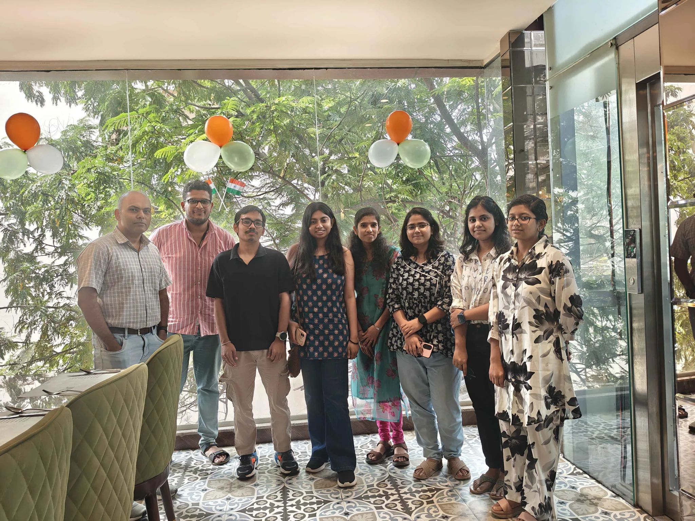

Raghunathan Ramakrishnan, Associate Professor, Ph.D. TU-Muenchen (2011)
Atreyee Majumdar, Ph.D. Student (2023 batch)
Surajit Das, Integrated M.Sc. Ph.D. Student (2023 batch)
Amrita Bera, Ph.D. Student (2023 batch)
Anita Parida, Ph.D. Student (2023 batch)
Elamathi Selvan, Ph.D. Student (2024 batch)
Parimala Devi, Postdoctoral Research Associate (July 2025-)

Versha, Project Associate
Anjali, Project Associate
Susmita Tripathy, Ph.D. Student (2020 batch)
Thesis: Computational investigation of chemical shifts in core electron binding energies of organic molecules (viva voce held on 11 May 2026)
Muskaan Mangat, Off-Campus M.Sc. Student (July-Dec 2024)
UM-DAE Center for Excellence in Basic Sciences, MUMBAI
Dissertation: Computational Investigations of Wavefunction Instabilities in Quantum Chemistry Approximations
Shweta Jindal, Postdoctoral Research Associate
Anant Bir Singh Virk, Project Associate
Saurabh Chandra Kandpal, Ph.D. Student (2018 batch)
Thesis: First-principles investigation of stereo-electronic factors governing elementary steps of low-temperature hydrocarbon combustion (viva voce held on 23 November 2024)
Sai Vijay Mocherla, Project Associate
Sabyasachi Chakraborty, Ph.D. Student (2016 batch)
Thesis: Quantum chemical investigations across diverse chemical spaces (viva voce held on 15 December 2022)
Prakriti Kayastha, Project Associate
Salini Senthil, Project Associate
Amit Gupta, Postdoctoral Research Associate
Sambit Kumar Das, Project Associate
Rutvij Vihang Bhavsar, Project Associate
Khushi Tiwari
Sura Suma
Nehad Ahmed
Shruti Jain
Soni Yadav
Rukhsar Chougle
Jaslin Kaur
Merlyn Baby
Divya Suman
Sowmya Krishnan
Sharanya Srinivasan
Anjana R Kammath
Rishabh Gupta
Manvi Gupta
Ahana Ghosh